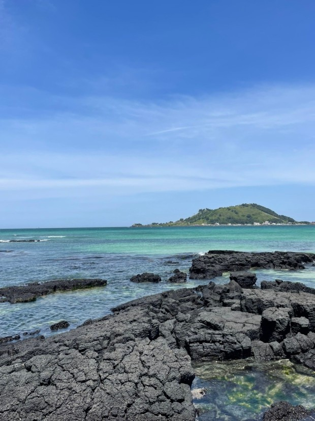

내가 태어난 곳
제가 태어난 곳은 수원시입니다. 수원시는 대한민국 경기도 중남부에 있는 특례시이자 경기도청 소재지입니다. 수원의 대표적 명소는 고고학적 가치를 지닌 수원화성이 있으며, 광교호수공원은 야경이 아름다워 밤에도 산책을 즐기는 사람들이 많습니다. 수원 통닭골목은 저렴한 가격에 비해 양이 푸짐해 입소문을 타고 전국 각지에서 많은 이들이 찾는 장소 입니다.
내가 가봤던 곳
 제가 가본 곳 중에 가장 기억에 남는 장소는 제주도 입니다. 제주도를 처음 여행할 때, 이국적인 픙경과 자유로운 분위기에 매료되어 여행했던 3박 4일이 매우 짧게 느껴졌었습니다. 해안도로를 스쿠터를 타고 즉흥적으로 가고 싶은 곳을 정해 이곳저곳을 돌아다니며 행복을 느꼈습니다.
내가 좋아하는 음식
제가 좋아하는 음식은 김치찌개입니다. 어릴 때부터 식사할 때 김치와 함께 먹는 것을 좋아했고, 돼지고기 김치찌개를 특히 좋아했었습니다.
내가 좋아하는 것
제가 좋아하는 것은 노래듣기입니다. 이동 중일 때나 공부할 때 등 노래를 들으며 하는 것을 좋아합니다. 또, 노래부르는 것도 좋아해서 혼자 종종 코인노래방을 가기도 합니다